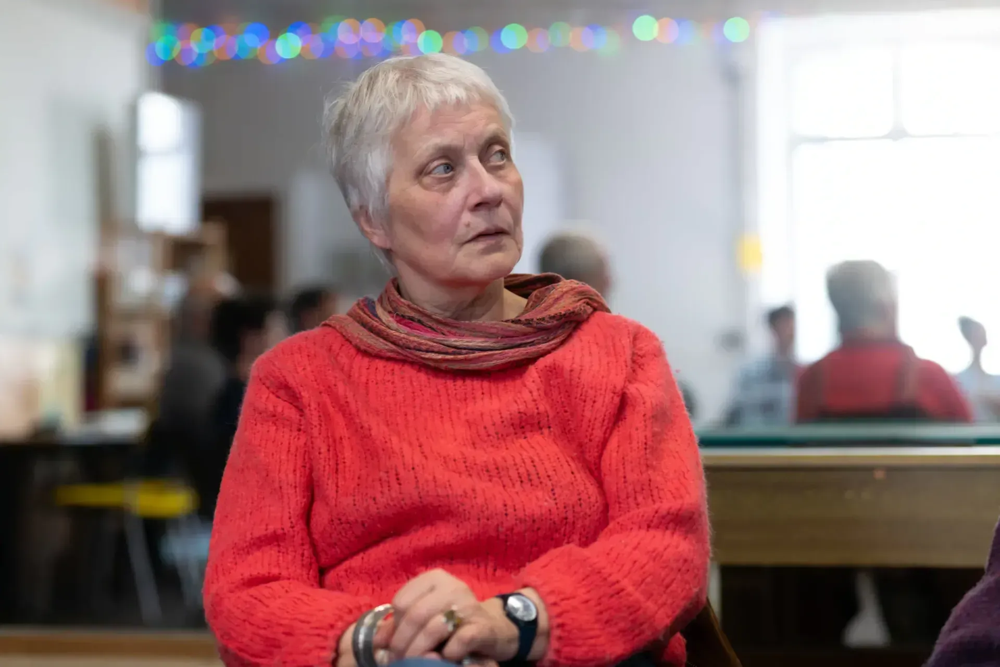
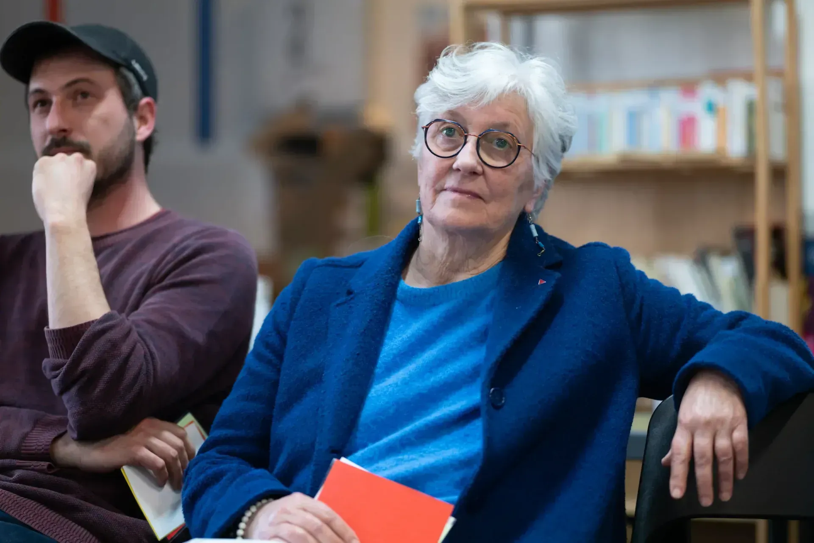
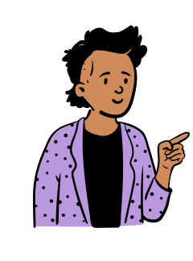
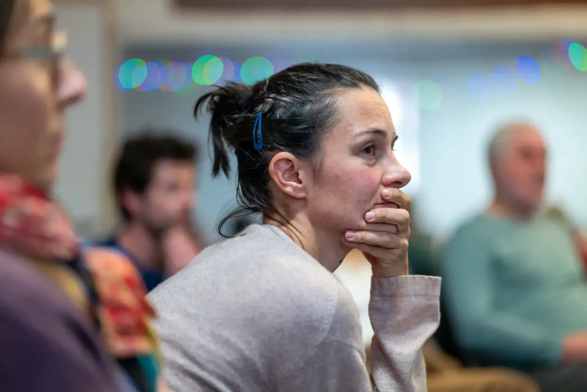
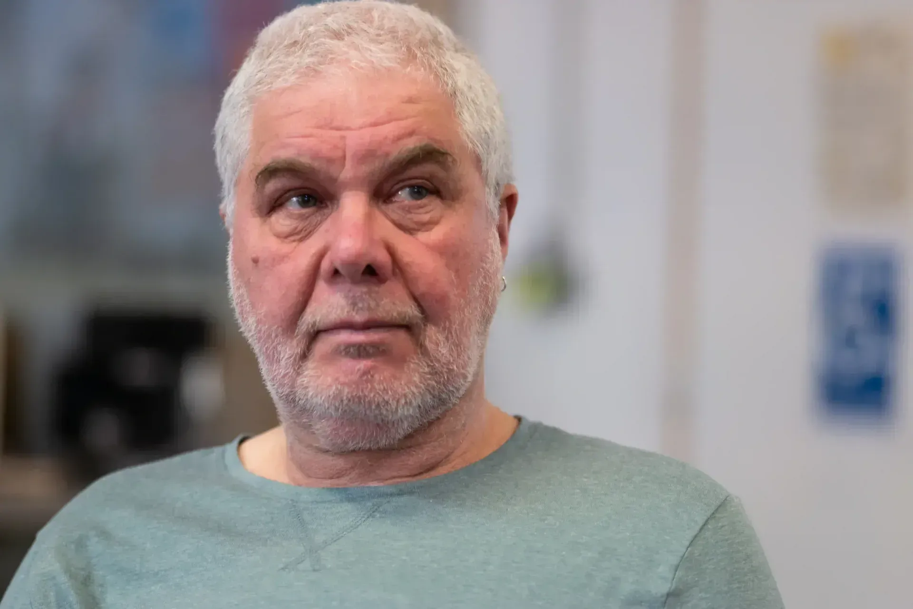
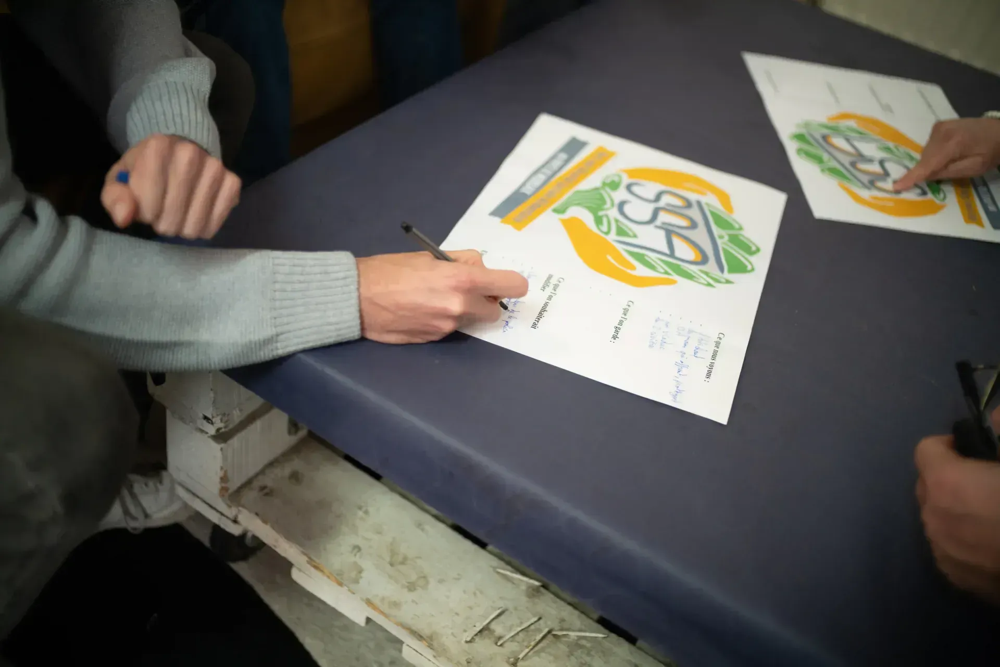
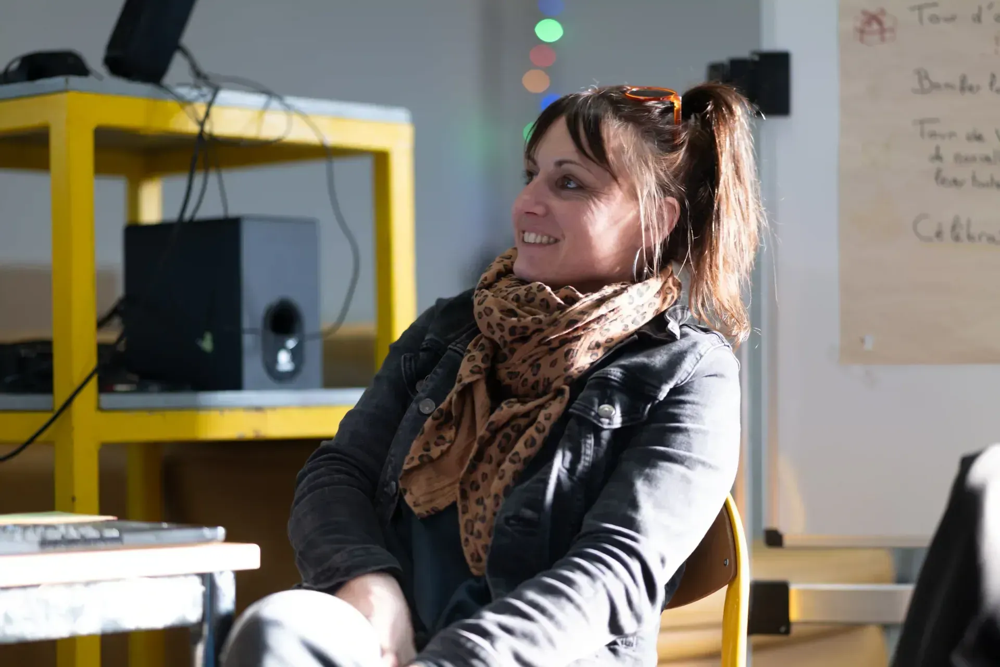
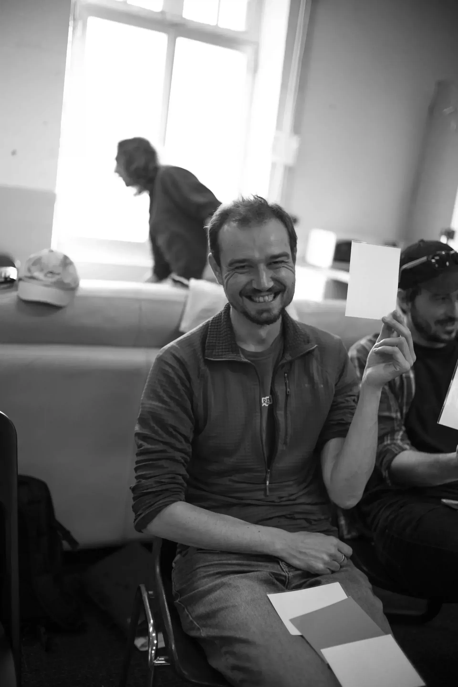
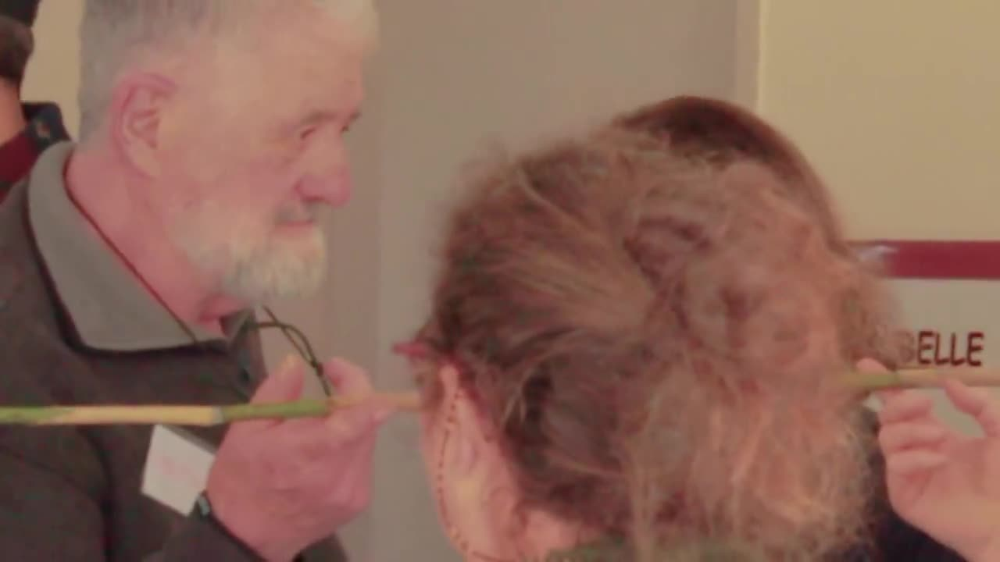
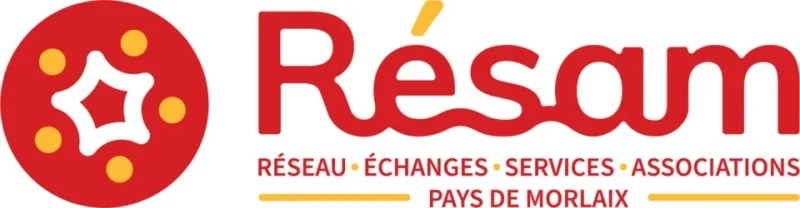

9 avril 2026
Soirée de lancement de la caisse citoyenne
Une belle soirée de lancement de la caisse.
Pour un droit fondamental et universel à une alimentation saine et durable.




Les prochains événements
7déc. 2026
Lundi, 18 h 00 · locaux de l'AFPA, bellevue de la Madeleine, Morlaix
Galerie de la SSA
Voir la galerie




9 avril 2026
Une belle soirée de lancement de la caisse.

9 avril 2026

14 mars 2026

12 février 2026
Le groupe « Sécurité Sociale de l'Alimentation » (SSA)
Le collectif pour une Sécurité Sociale de l'Alimentation en Pays de Morlaix est composé d'une trentaine de citoyennes et citoyens vivant sur le Pays de Morlaix. Il est accompagné par 4 structures associatives du Pays de Morlaix.
Découvrir le collectif L'ULAMIR-CPIECentre social et centre d'éducation à l'environnement.
L'ULAMIR-CPIECentre social et centre d'éducation à l'environnement.
Le RésamMaison des associations du Pays de Morlaix. Le BuzukPorteuse de la monnaie locale.
Le BuzukPorteuse de la monnaie locale. L'Adess du Pays de MorlaixPôle ESS du Pays de Morlaix.
L'Adess du Pays de MorlaixPôle ESS du Pays de Morlaix.Financeurs